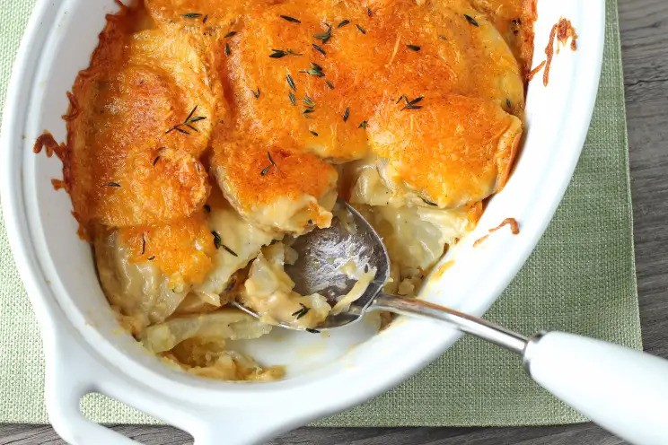

Scalloped Potatoes

Description
Here's a great scalloped potato recipe that's so easy and absolutely delicious. The leftovers are just as good, maybe even better, the next day. This is one of my favorite and most prepared recipes, from my 1971 Florence Junior Welfare League cookbook.
Ingredients
- 4 cups of thinly sliced potatoes
- 3 tablespoons of butter
- 3 tablespoons of flour
- 1 1/2 cups of milk
- 1 teaspoon of salt
- 1 dash of cayenne pepper
- 1 cup of grated sharp cheddar cheese
- 1/2 cup of grated cheese, to sprinkle on top
- pinch of paprika
Instructions
- In a small sauce pan, melt butter and blend in flour.
- Let sit for a minute.
- Add all of cold milk, stirring with a whisk.
- Season with salt and cayenne.
- Cook sauce on low until smooth and boiling, stirring occasionally with a whisk.
- Reduce heat and stir in cheese.
- Place a half of the sliced potatoes in a lightly greased one quart casserole dish.
- Pour half of cheese sauce over potatoes.
- Repeat with second layer of potatoes and cheese sauce.
- Sprinkle the remaining cheese on top.
- Top with some paprika for color.
- Bake uncovered for about 1 hour at 350°F.
Back Home